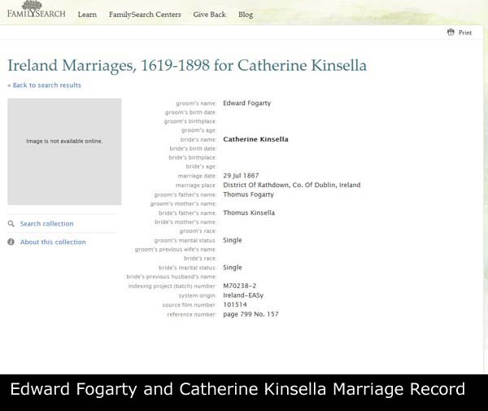

Family Record: Edward FOGARTY x Catherine KINSELLA
Family Record: Edward FOGARTY x Catherine KINSELLA - Overview
| Husband | Edward FOGARTY d. Before 1901 | |
| Wife | Catherine KINSELLA d. Before 1901 | |
| Child | Thomas FOGARTY b. 05/05/1868 d. About 1964 | |
| Change Date | Date | 14/04/2011 |
| Time | 14:06 | |
Edward FOGARTY was the only child of Thomus FOGARTY. Edward died before 1901. Catherine KINSELLA1 was the only child of Thomus KINSELLA. She died before 1901. On 29/07/1867 Edward married Catherine. One son given. |  |
Children
| i | Thomas FOGARTY2 was born on 05/05/1868 in Booterstown, Dublin, Ireland. He died about 1964 aged about 96. He was baptized on 17/05/1868 in St John The Baptist Church, Blackrock, Dublin, Ireland. On 17/05/1868 Thomas was christened in St John The Baptist Church, Blackrock, Dublin, Ireland. He was a Van Driver on 21/06/1896. Thomas resided on 21/06/1896 in Seafort Parade, Blackrock, Dublin, Ireland. Thomas resided in 1901 in 15 Rock Road, Booterstown, Dublin, Ireland. In 1911 he resided in 18 Emmet Square, Booterstown, Dublin, Ireland. |  |
Notes
1. No news yet for Catherine, but there is evidence of other family members Her son Thomas's godparents were John Kinsella and Anne Mary Kinsella in 1868 Her great-grand daughter, Monica's godfather was Peter Kinsella in 1934; [Note Record]
2. Thomas was born near Booterstown, and baptised in St John the Baptist Church, Blackrock. Presume he lived at Seafort Parade in 1869 where Catherine was born. His age is reported inconsistently on census forms which also report that they had another child who died in infancy. He lived in various houses in Booterstown. He listed himself as a general labourer. We think Thomas had about 6 brothers including a John.; [Note Record]
Web page generated using a registered copy of GedScape software, licensed by Mark Watkin